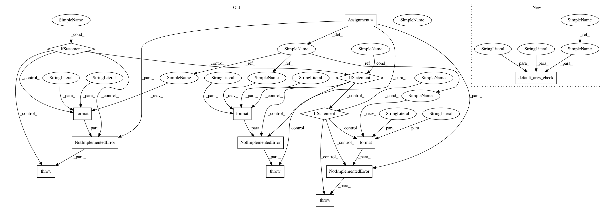

57e421b2ca0ac79f05f6b0b6ac13df3ffc47359a,tf_encrypted/keras/layers/convolutional.py,Conv2D,__init__,#Conv2D#Any#Any#Any#Any#Any#Any#Any#Any#Any#Any#Any#Any#Any#Any#Any#,82
Before Change
self.kernel_initializer = initializers.get(kernel_initializer)
self.bias_initializer = initializers.get(bias_initializer)
if dilation_rate:
raise NotImplementedError(
arg_not_impl_msg.format("dilation_rate", "Conv2d"),
)
if kernel_regularizer:
raise NotImplementedError(
arg_not_impl_msg.format("kernel_regularizer", "Conv2d"),
)
if bias_regularizer:
raise NotImplementedError(
arg_not_impl_msg.format("bias_regularizer", "Conv2d"),
)
if activity_regularizer:
raise NotImplementedError(
arg_not_impl_msg.format("activity_regularizer", "Conv2d"),
)
if kernel_constraint:
raise NotImplementedError(
arg_not_impl_msg.format("kernel_constraint", "Conv2d"),
)
if bias_constraint:
raise NotImplementedError(
arg_not_impl_msg.format("bias_constraint", "Conv2d"),
)
def build(self, input_shape):
if self.data_format == "channels_first":
channel_axis = 1
else:
After Change
self.bias_initializer = initializers.get(bias_initializer)
// Not implemented arguments
default_args_check(dilation_rate, "dilation_rate", "Conv2D")
default_args_check(kernel_regularizer, "kernel_regularizer", "Conv2D")
default_args_check(bias_regularizer, "bias_regularizer", "Conv2D")
default_args_check(activity_regularizer,
"activity_regularizer",
In pattern: SUPERPATTERN
Frequency: 3
Non-data size: 14
Instances
Project Name: mortendahl/tf-encrypted
Commit Name: 57e421b2ca0ac79f05f6b0b6ac13df3ffc47359a
Time: 2019-06-25
Author: yann.dupis@gmail.com
File Name: tf_encrypted/keras/layers/convolutional.py
Class Name: Conv2D
Method Name: __init__
Project Name: mortendahl/tf-encrypted
Commit Name: 57e421b2ca0ac79f05f6b0b6ac13df3ffc47359a
Time: 2019-06-25
Author: yann.dupis@gmail.com
File Name: tf_encrypted/keras/layers/relu.py
Class Name: ReLU
Method Name: __init__
Project Name: mortendahl/tf-encrypted
Commit Name: 57e421b2ca0ac79f05f6b0b6ac13df3ffc47359a
Time: 2019-06-25
Author: yann.dupis@gmail.com
File Name: tf_encrypted/keras/layers/dense.py
Class Name: Dense
Method Name: __init__
Project Name: mortendahl/tf-encrypted
Commit Name: 57e421b2ca0ac79f05f6b0b6ac13df3ffc47359a
Time: 2019-06-25
Author: yann.dupis@gmail.com
File Name: tf_encrypted/keras/layers/convolutional.py
Class Name: Conv2D
Method Name: __init__